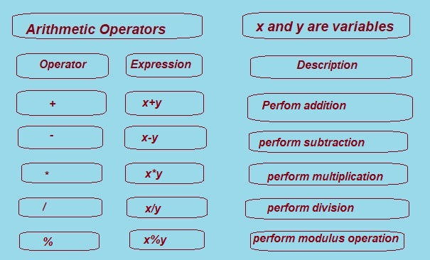

What Are Arithmetic Operators in C? (With Clear Examples)
In this tutorial, you will learn about Arithmetic Operator in C programming that are part of the C program.
C language provides wide range of operators, but In this tutorial let learn Arithmetic operators.
Lets first define what is operator,Operand and Expression ?.
Operator:
Operator is a symbol that is used to perform some action on operands.
They can be used in programs to define expressions and mathematical formulas.
Arithmetic Operator:
The C arithmetic operators are the symbols that are used to perform mathematical operations on operands.
Before to start Arithmetic operators let understand what is Operands and expression?
Operand: A variable or a constant over which the operation has to be performed.
Expression:
In computer science an expression is a particular concept in which a number of variables or constants, and operators and functions, are put together in a single statement that is acted on by a particular programming language.
In C Language An expression is a combination of operands and operators it process and computes a value stored in a variable. The operator performs actions on operands.
Arithmetic operators in c language is also called as C binary arithmetic operator.
The C arithmetic operators work on two operands.
C provides 5 Binary Arithmetic Operators. An arithmetic operator performs mathematical operations such as addition, subtraction, multiplication, division,modulus or remainder etc. on numerical values (constants and variables).